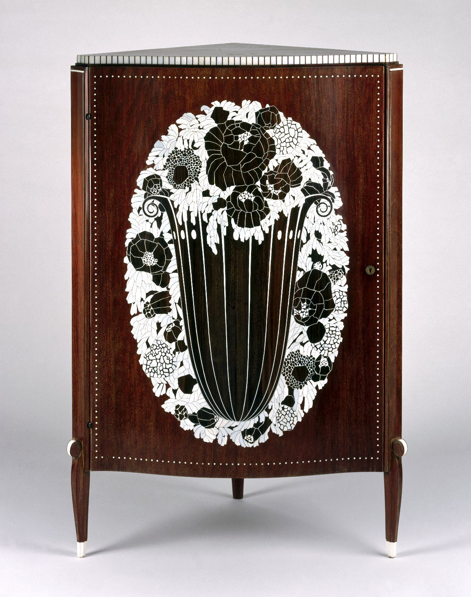

References / Furniture / 24
Corner cabinet by Émile-Jacques Ruhlmann
A tall corner cabinet in dark exotic wood whose door carries an oval of ivory marquetry: a ribbed vase in a dense wreath of stylized flowers.
- Source
- Brooklyn Museum: Corner Cabinet, 71.150.1
- Creator
- Émile-Jacques Ruhlmann
- Made
- c. 1923
- Style
- Art Deco (agent-proposed, not yet reviewed by a person)
- Moods
- Luxurious, formal, refined
- Evidence
- Downloaded and inspected the Brooklyn Museum photograph published on Wikimedia Commons._Corner_Cabinet,_ca._1923..jpg) (1214 × 1536 px), a frontal studio view on a gray ground. Read the museum record in Claude in Chrome.
- Reviewed
- Rights
- Open license, stored. License: public domain. Rights policy
Context
The Brooklyn Museum dates the cabinet c. 1923, gives its place of making as Paris, and lists mahogany, Macassar ebony, rosewood, ebony, ivory, amaranth, and brass. It is branded “RUHLMANN” twice on the back panels. Brooklyn Museum.
The Commons caption from the museum’s 2014 upload gives the materials as kingwood (amaranth) veneer on mahogany with ivory inlay, and the size as 126.7 × 80.6 × 59.7 cm. Commons._Corner_Cabinet,_ca._1923..jpg).
Search-result text from the museum’s catalogue says Ruhlmann designed the cabinet for “Les Terrasses,” the house of A. Weitz in Lyon, and links the black-and-white inlay to the Wiener Werkstätte. This was not shown on the page text read on 2026-09-25. Brooklyn Museum.
Observed
- The front is a single door of red-brown wood with a slightly bowed outline, framed by a line of small ivory dots.
- An upright oval of ivory marquetry fills most of the door. In it a dark, fluted vase with ivory rib lines and scrolled handles holds a dense mass of stylized flowers and leaves in ivory and dark wood.
- The composition is symmetrical about the vertical axis of the door.
- The top edge carries a band of alternating ivory and dark blocks, like a dentil or piano-key border.
- Three slender, tapered legs end in small ivory sabots; two ivory disks mark the tops of the front legs.
- There is no metal mount on the front except a small keyhole escutcheon.
Why it belongs
The piece shows the early, luxurious side of Art Deco: an eighteenth-century furniture type made new with flattened, geometric flower ornament and a strong dark-and-ivory contrast.
The basket of stylized flowers is a stock motif of 1920s French decorative art, here held inside a strict oval and a symmetrical axis.
Borrow
Frame a central ornament with a single row of small dots in the accent color.
Use one strong light-on-dark ornament, centered, on an otherwise plain surface.
Edge a panel with a band of alternating light and dark blocks.
Measured
Machine-extracted by tools/image-traits.py on . Full measurement.
- Mean chroma
- 0.06
- Palette
- #e9e4e8 24%
- #34150e 14%
- #d6d3d7 12%
- #afaeb1 8%
- #c0c0c3 6%
- #f4f2f5 6%
- #0e0e06 4%
- #1c190f 4%

